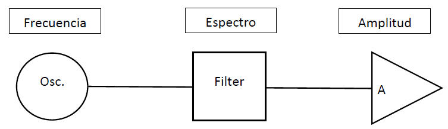
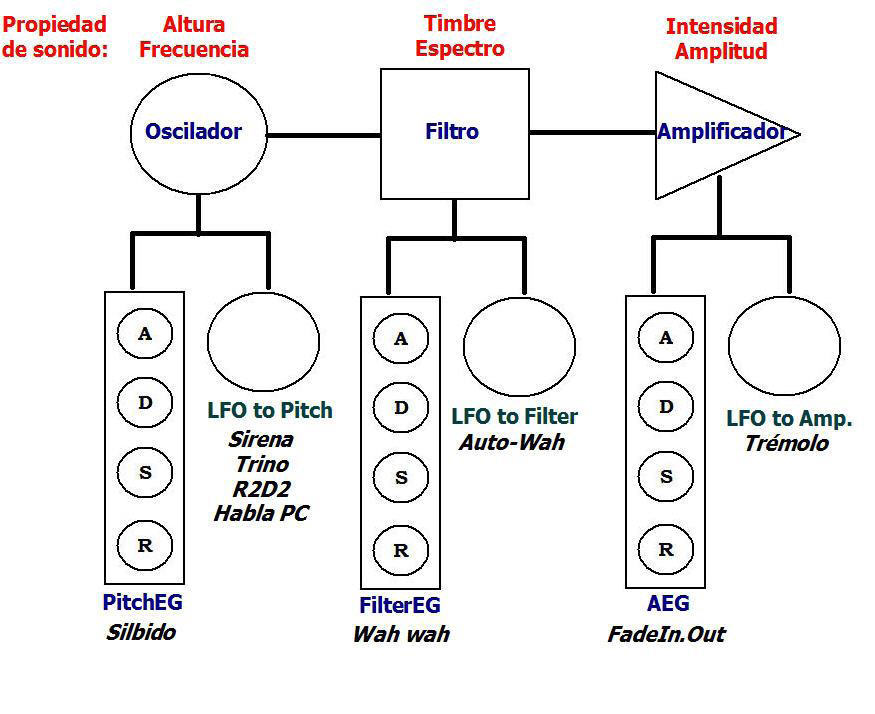

Instituto Superior Orson Welles
0101. Estructura funcional del sintetizador
El módulo de voz
Todos los sintetizadores funcionan de la misma manera y realizan su tarea, en este orden, a través de unos componentes denominados "módulos":
- Generación de la señal de audio utilizando alguna técnica de síntesis (Oscilador / Oscillator)
- Filtración del espectro de la señal de audio (Filtro / Filter) y
- Manipulación de la amplitud antes de llevarla a una canal de audio de salida. (Amplificador / Amplifier)
Popularmente estos módulos se suelen representar gráficamente de la siguiente manera:

Si bien es cierto que el módulo del oscilador es el verdadero sintetizador y por ahí ya sale una señal de audio perfectamente audible, en los sintetizadores suelen haber controles que manipulan la frecuencia (la altura, la nota). Encima de cada módulo podrás ver la propiedad de sonido que, en los sintetizadores, podrás controlar ya sea manualmente o de forma automática.
Los dispositivos de control
Las propiedades de sonido (frecuencia, espectro, amplitud) pueden ser controladas, en un sintetizador...
- De manera manual: a través de perillas, botones, teclas, pedales, controladores ópticos, etc.
- De manera automática: a través de dispositivos que hay que programar de alguna u otra manera. Los mínimos que encontrarás en cualquier sintetizador son los denominados:
- Generador de envolvente (EG): Son dispositivos automáticos que ejercen un control singular de algún parámetro o propiedad de sonido.
- Oscilador de baja frecuencia (LFO): Son dispositivos automáticos que ejercen un control repetitivo, recursivo, sobre algún parámetro o propiedad de sonido.
Los generadores de envolvente suelen representarse gráficamente con un rectángulo y dentro de él sus parámetros típicos.
Los osciladores de baja frecuencia se representan con un círculo como si fuera un oscilador y, es que, eso es lo que son. Excepto que sus velocidades van de casi 0 a 20 Hz.
Así, lo que debemos esperar en un sintetizador mínimo es un par de controles para cada módulo:

En la imagen hemos anotado:
En color rojo las propiedades del sonido y su equivalente en música.
En color azul los nombres de los parámetros en el sintetizador para controles singulares.
En color verde los nombres de los parámetros en el sintetizador para controles cíclicos.
En color negro los nombres coloquiales del efecto resultante al manipular el control.
Licencia: licencia propietaria